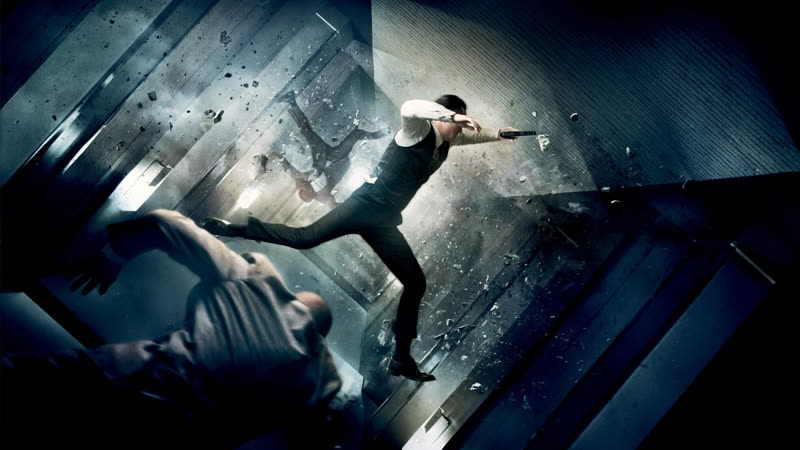

2010
Inception
A thief who steals secrets from sleeping minds is hired to plant an idea instead, and the job unfolds across dreams stacked inside dreams.
How it plays with time
A heist is carried out inside a dream, then inside a dream within that dream, and so on down. The levels cannot be ordered as earlier and later, so the film cuts between them as simultaneous strands driven by shared deadlines. The climax intercuts four nested timelines framed by the flight above them. source
Themes
- Guilt
- Cobb's dead wife appears inside the dreams he builds and keeps wrecking the jobs. She reads as a projection of what he cannot forgive himself for, which is why she intrudes exactly when the team needs a clean run.
- Grief
- Cobb cannot go home, and the whole job is a way to buy back his old life and see his children again. A loss drives every decision he makes in the film.
- Memory
- Nolan has said the heist framing was too light for a story about dream and memory, so Cobb was given an emotional wound to carry. The dreams are built from remembered places and people, which is how the past leaks into the job. source
- Time
- During the climax the film cuts among several dream levels at once, each running at its own speed, while a van falls in slow motion on the topmost one. The deadlines tie the clocks together. source
- Deception
- The final shot cuts away as a spinning top seems to wobble, leaving the viewer unsure whether the scene is real. The film plays tricks on its characters and its audience in the same move.
Where it came from
- Nolan says he has been fascinated by dreams since childhood, which is the root of the film's idea. Christopher Nolan
I've been fascinated by dreams my whole life
source - Nolan first wrote it as a conventional heist, then decided that was too shallow for a story about dream and memory, and raised the emotional stakes with help from conversations with Leonardo DiCaprio. Christopher Nolan source
- Bordwell, relaying Kristin Thompson, says Nolan wanted audiences to work actively through near-continuous exposition rather than receive the heist plan up front. Kristin Thompson (via David Bordwell) source
- Tom Shone's book The Nolan Variations (2020) discusses how Nolan came up with Inception, with the idea first arising in his student days according to a search summary of the publisher blurb. Cited as a book only; no excerpt fetched. Tom Shone unverified
Stills

Stills © their studios, used here for commentary and criticism.
People who keep coming back
- Emma Thomas, producer: also following, memento, insomnia, batman begins, the prestige, the dark knight, the dark knight rises, interstellar, dunkirk, tenet, oppenheimer, the odyssey
- Wally Pfister, cinematographer: also memento, insomnia, batman begins, the prestige, the dark knight, the dark knight rises
- Hans Zimmer, composer: also batman begins, the dark knight, the dark knight rises, interstellar, dunkirk
- Lee Smith, editor: also batman begins, the prestige, the dark knight, the dark knight rises, dunkirk, tenet, oppenheimer
- Tom Hardy, actor (Eames): also the dark knight rises, dunkirk
- Michael Caine, actor (Miles): also batman begins, the prestige, the dark knight, the dark knight rises, interstellar, tenet
How it was received
Most critics admired the ambition and called it an inventive, big-budget puzzle, with some reviews reaching for words like masterpiece. A minority found it cold or overly mechanical. Wikipedia gave 87% on 363 reviews at the time of writing; Rotten Tomatoes itself now shows 86% on 364. Metacritic 74 source. Rotten Tomatoes 86% source.
Audiences have been warmer than the critics: Metacritic users give 8.8 and Rotten Tomatoes audiences 91%. It sits among the most-discussed films of its decade. Letterboxd average not retrieved; the page text carried no rating figure.
Three things most people miss
- The levels are not flashbacks. A dream within a dream cannot be placed earlier than the one around it, so Nolan cuts between them as simultaneous strands tied together by shared deadlines. source
- The heist plan is not set out before the job begins. Exposition runs almost continuously, so the audience learns the plan alongside the team, at the cost of knowing less about the characters' backgrounds. source
- Earlier Nolan films intercut phases of one story. Inception intercuts embedded stories, and its climax juggles four nested timelines inside a fifth frame. Bordwell suggests that is near the limit of what viewers can follow. source
Cast
Leonardo DiCaprio as Dom Cobb; Ken Watanabe as Saito; Joseph Gordon-Levitt as Arthur; Marion Cotillard as Mal; Elliot Page as Ariadne.